Adding a connector with a connector schema to an existing deployment with a gateway schema and an Information Store schema
In this example scenario, a new connector with its own connector schema will be added to an i2 Analyze deployment with an existing gateway schema and an Information Store schema. Item types in the connector schema will be mapped to item types in the gateway schema and item types in the gateway schema will be mapped to item types in the Information Store schema. This will demonstrate how i2 Analyze resolves item type mappings that are chained together. That is, how mapping type A to type B and type B to type C results in an implicit mapping from type A to type C, so all records of type A are mapped to records of type C. You will also learn how mapping to item types in the Information Store schema allows mapped records to be uploaded to the Information Store.
Setting up the scenario
To follow this scenario:
- Ensure that you have deployed i2 Analyze with the Information Store and the i2 Connect Gateway using the NYPD schema and charting scheme found in the
schemadirectory of this repository. - Add the example KCPD connector to the deployment configured to use a gateway schema.
You should now be able to connect to the i2 Analyze server in Analyst's Notebook Premium and use the services provided by the KCPD connector. For example, you might use the "Get All" service and copy some of the results to a chart.
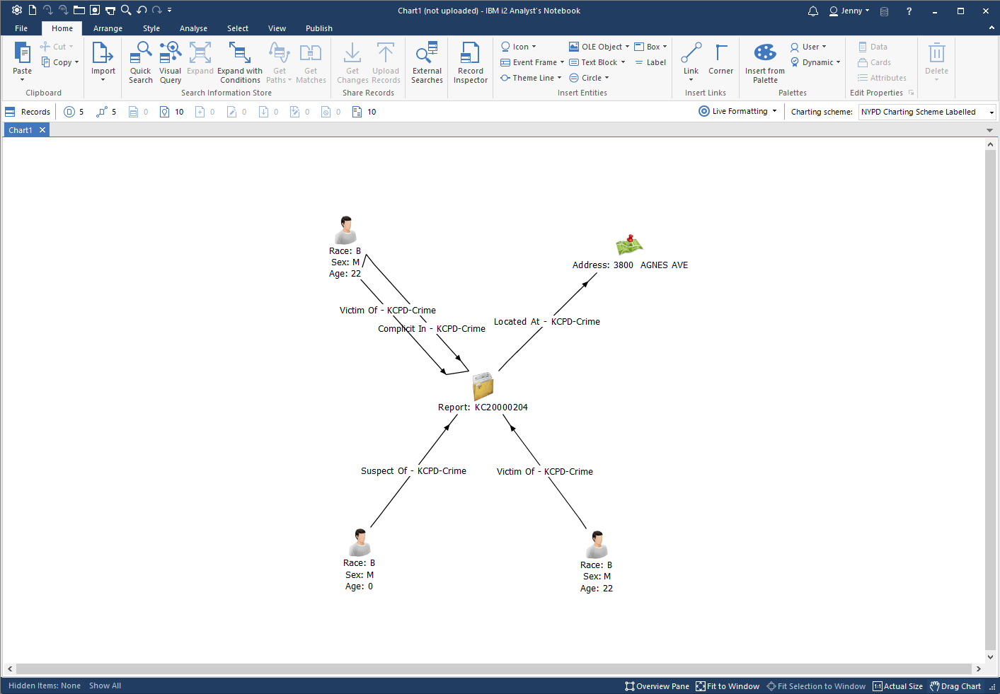
Adding a new connector with a connector schema
Now, add the example ERI connector to the deployment, ensuring it is configured to use its own connector schema.
You should now also be able to use the services provided by the ERI connector and copy some results to the chart.
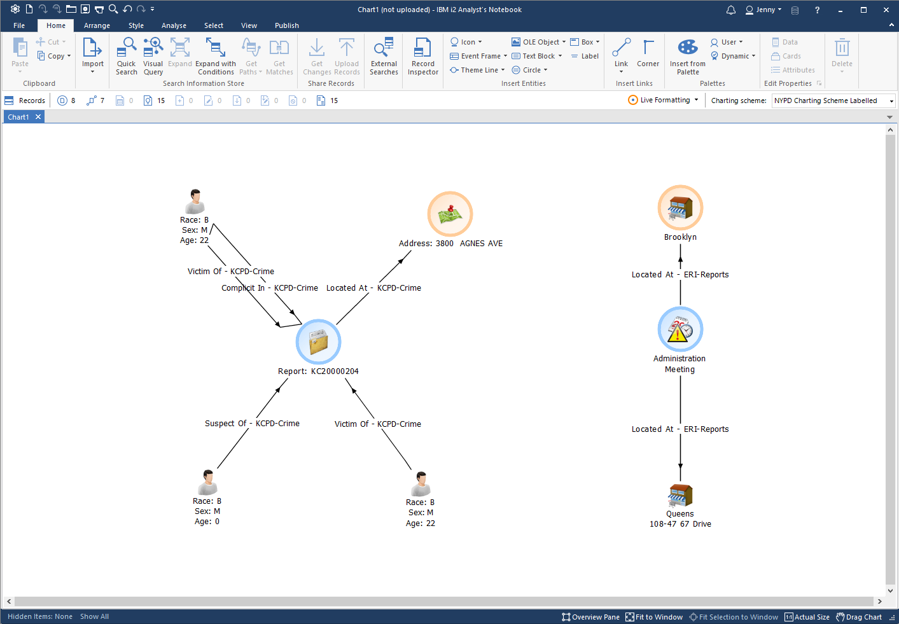
You can see that the gateway schema used by the KCPD connector and the connector schema used by the ERI connector have different item types to model the same real-world object. This is evident by the different icons used and, in the image shown, you can see pairs of the similar types highlighted in the same color.
| 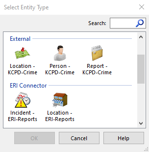 | 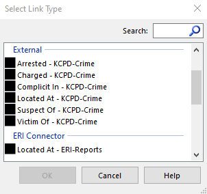 |
|---|---|
By looking at all the available item types, you can see that both schemas have their own:
- Location entity type
- Report/Incident entity type (these have different names, but they model the same concept)
- Located At link type
This duplication can be removed using item type mapping.
Configuring item type mappings from a connector schema to a gateway schema
Go to the item type mapping configuration in the i2 Analyze Server Admin Console in a web browser to see the list of item types that can be mapped. You should see the list of all item types in the ERI-Reports schema, and that none of them have been mapped.
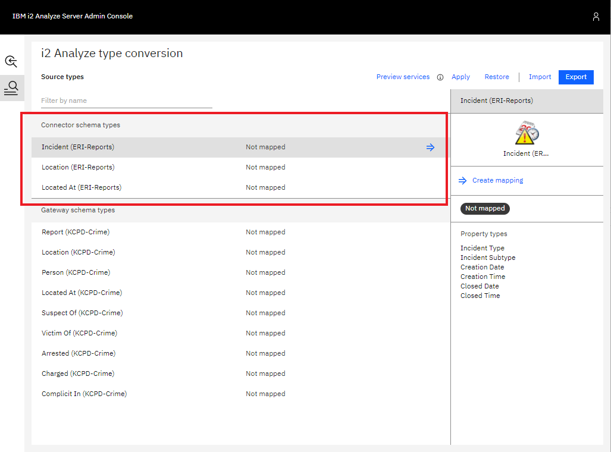
Where appropriate, ERI-Reports item types can be mapped to similar item types in the pre-existing KCPD-Crime gateway schema.
Incidents and Reports
The Incident entity type in the ERI-Reports schema can be mapped to the Report entity type in the KCPD-Crime schema.
- Select the Incident (ERI-Reports) item type in the list, then click Create mapping in the right-hand pane. This shows the list of item types to which the Incident item type can be mapped.
Select the Report item type from the KCPD-Crime schema types, then click Create mapping. You will then see all the properties of the Report type in the gateway schema, with options available to choose how they should be populated when mapping from an ERI-Reports Incident record.
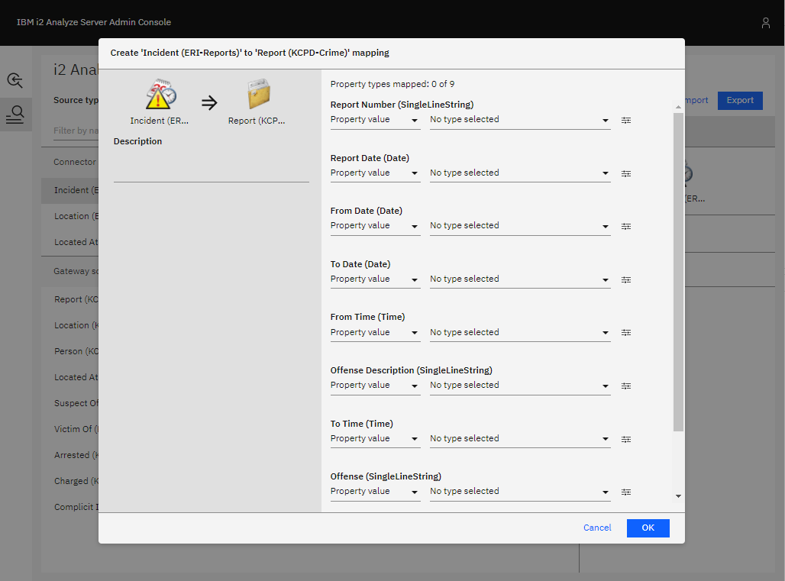
In the example below, the properties of the Incident (ERI-Reports) type are mapped to the properties of the Report (KCPD-Crime) according to the following table.
Incident (ERI-Reports) Report (KCPD-Crime) Creation Date From Date Closed Date To Date Creation Time From Time Closed Time To Time Incident Subtype Offence Description 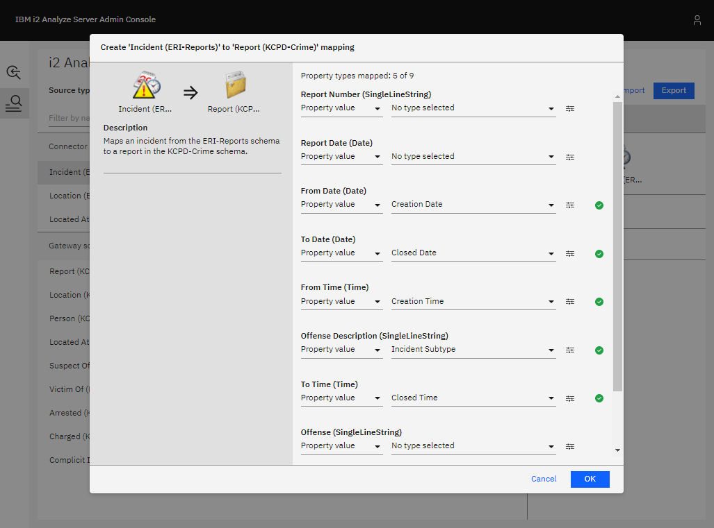
There is no comparable property in the Incident (ERI-Reports) type for the Report (KCPD-Crime) properties:
- Report Number
- Report Date
- Offense
- Domestic Violence
So these are left unmapped. This means that they will not be populated for the Report records that are mapped from Incident records.
Once you are satisfied with all the property mappings, confirm the mapping by clicking OK. You should now see that there is a validation warning message for the mapping. This warning occurs when a mandatory property of the target type is unmapped. This is the case for the mandatory property type Report Number of the Report (KCPD-Crime) item type. Any Report entity created from an Incident entity using this mapping would not have a Report Number, which would make that Report invalid.
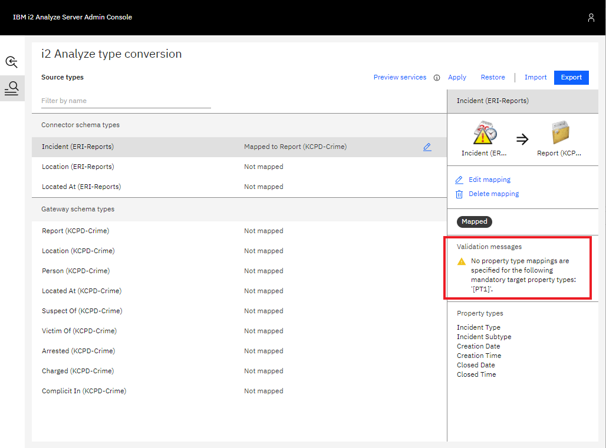
To resolve this, select the Incident (ERI-Reports) item type in the list, then click Edit mapping in the right-hand pane to update the mapping. In the mandatory Report (KCPD-Crime) property, Report Number, select the dropdown menu and change the type to
Fixed value. Populate the field with a constant value.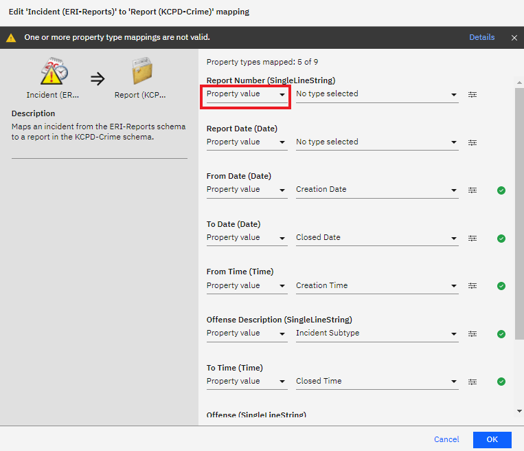 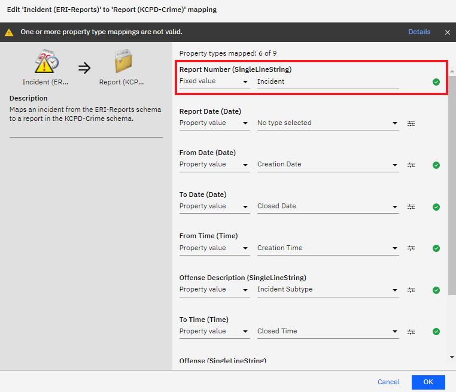 Once the property mapping has been updated, confirm the mapping by clicking OK.
Locations
Following the same process, the Location type from the ERI-Reports schema can be mapped to the Location type in the KCPD-Crime schema.
The Address and Coordinates properties of Location (ERI-Reports) are automatically mapped to the Address and Coordinates properties of Location (KCPD-Crime). Below is an example configuration you could use.

Again, once you are satisfied with the mapping configuration for Location records, click OK to confirm the mapping.
Located At
The Located At (ERI-Reports) link type can be mapped to the Located At (KCPD-Crime) link type by following the same process:
- Select Located At (ERI-Reports) in the list of types, then click Create mapping in the right-hand pane.
- Select Located At from the KCPD-Crime schema types, then click Create mapping.
- There are no properties to map, so just add a description if you wish.
- Confirm the mapping by clicking OK.
Testing the item type mappings
Once you have defined the item type mappings, you should see the updated list of types like the example shown below.
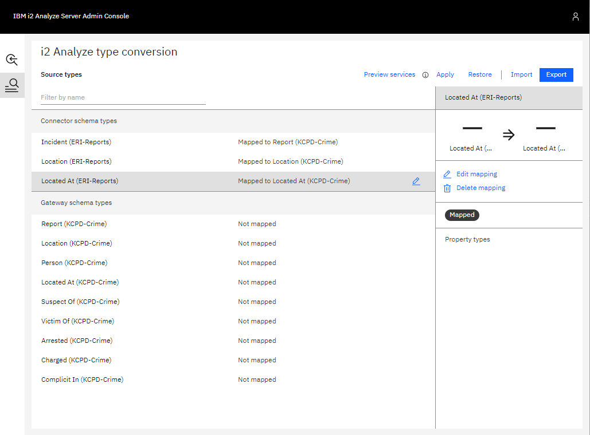
To test the item type mappings by previewing the external searches provided by the KCPD and ERI connectors:
- Click Apply in the top-right. This applies the mappings to the test environment that is available only through the Admin Console. It does not apply the mappings to the live server.
- Click Preview services to open a preview of how the services would behave with the mappings you have configured. Notice how the ERI Connector's All data service now returns item types from the KCPD-Crime schema.
- Go back and make any changes to the mappings, repeating steps 1 and 2 until you are satisfied with the configuration.
Applying the item type mappings to the i2 Analyze server
To apply the mapping configuration you have created on the i2 Analyze server for all users, see Applying the mapping configuration to the i2 Analyze server.
The result
In Analyst's Notebook Premium, use some of the services provided by the connectors and copy some results from each connector to your chart. Notice how there are now no duplicate item types.
For example, compare the chart below to the one at the very beginning of this walkthrough in Adding a new connector with a connector schema. You can see that all of the records have types from the KCPD-Crime schema including the records from the ERI connector. This is because of the mapping configuration created that maps the item types in the ERI-Reports schema to the item types in the KCPD-Crime schema.
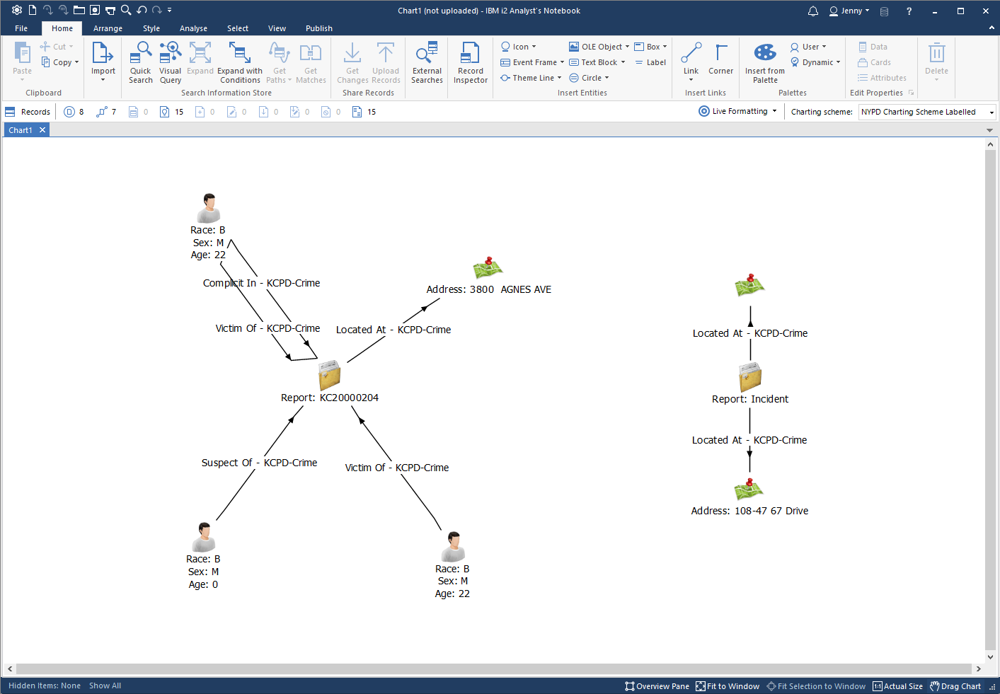
Uploading gateway mapped records to the Information Store
Notice that these records cannot be uploaded to the Information Store. This is because the item types of the records are defined in the KCPD-Crime gateway schema, not the Information Store schema. Next, you can define mappings from the gateway schema to the Information Store schema and see that the records returned from both connectors can then be uploaded to the Information Store.
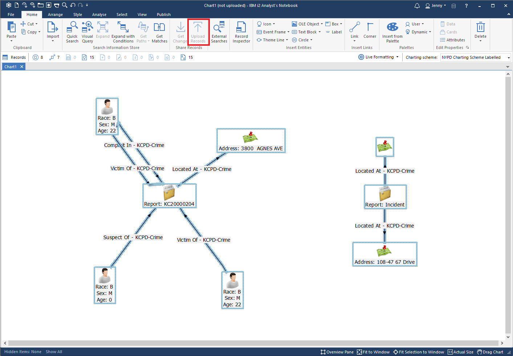
Configuring item type mappings from a gateway schema to an Information Store schema
Go to the item type mapping configuration in the i2 Analyze Server Admin Console in a web browser to see the list of item types that can be mapped. You should see the list of all item types in the KCPD-Crime schema, and that none of them have been mapped.
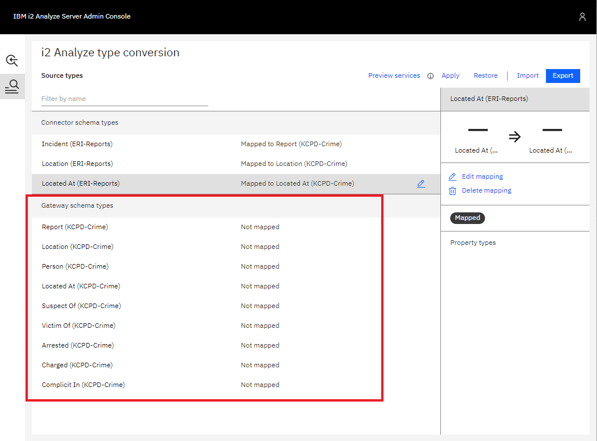
Where appropriate, KCPD-Crime item types can be mapped to similar item types in the NYPD-Complaints Information Store schema.
Reports and Complaints
The Report entity type in the KCPD-Crime schema can be mapped to the Complaint entity type in the Information Store schema.
- Select the Report (KCPD-Crime) item type in the list, then click Create mapping in the right-hand pane. This shows the list of item types to which the Report item type can be mapped.
Select the Complaint item type from the Information Store schema types, then click Create mapping. You will then see all the properties of the Complaint type in the Information Store schema, with options available to choose how they should be populated when mapping from a KCPD-Crime Report record.
In the example below, the properties of the Report (KCPD-Crime) type are mapped to the properties of the Complaint (InfoStore) according to the following table.
Report (KCPD-Crime) Complaint (InfoStore) Report Number Complaint Number From Date Complaint Start Date To Date Complaint End Date From Time Complaint Start Time To Time Complaint End Time Offense Description Offence Description Offense Classification Description Report Date Date Reported 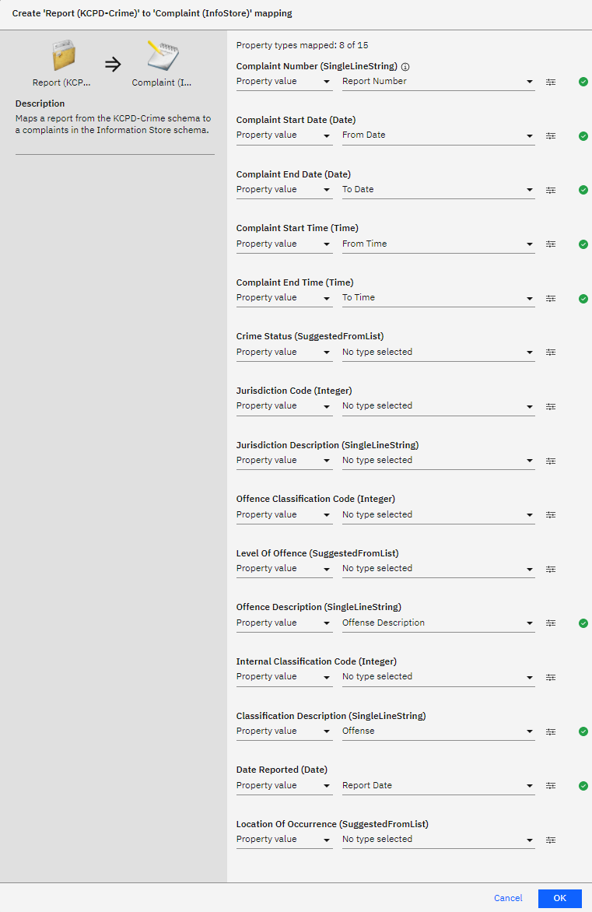
There is no comparable property in the Report (KCPD-Crime) type for the Complaint (InfoStore) properties:
- Crime Status
- Jurisdiction Code
- Jurisdiction Description
- Offence Classification Code
- Level Of Offence
- Internal Classification Code
- Location Of Occurrence
So these are left unmapped. This means that they will not be populated for the Complaints records that are mapped from Report records.
Once you are satisfied with all the property mappings, confirm the mapping by clicking OK.
Locations
Following the same process, the Location type from the KCPD-Crime schema can be mapped to the Location type in the Information Store schema.
The Coordinates property of Location (KCPD-Crime) is automatically mapped to the Coordinates property of Location (InfoStore). Below is an example configuration you could use.
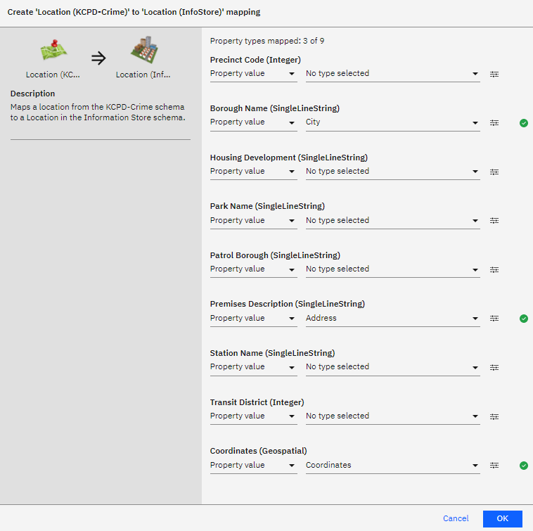
You can see that the Borough Name property of mapped Locations will be populated by the value of the City property from KCPD-Crime Location records. These properties are not an exact match for one another, but this can be used to make it clear when Locations are in Kansas City, instead of New York City, in case Coordinates are not provided.
You can go further and ensure the Borough Name property is always populated in mapped Locations by setting a default value, which will be used if the source KCPD-Crime Location record does not contain a value for the City property. To do this:
Click the button highlighted to the right of the Borough Name configuration shown below.
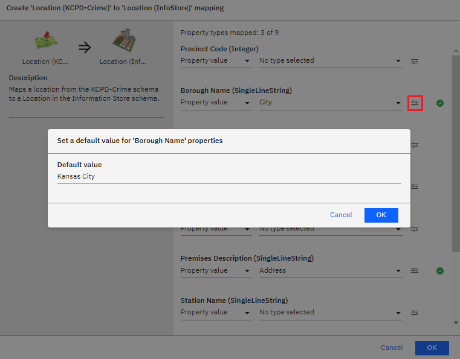
Enter a default value to use for the Borough Name property if a source KCPD-Crime Location record has no City value, e.g. "Kansas City".
Click OK.
Though the mapping of Address to Premises Description does not seem like a perfect match either, the Address of a Location might be too important not to have and the Premises Description is a suitable target property in which to store it.
Again, once you are satisfied with the mapping configuration for Location records, click OK to confirm the mapping.
People
Following the same process, you can map the Person (KCPD-Crime) type to the Person (InfoStore) type.
The Race and Sex property mappings will be automatically-generated, so the only property left is Age. Choose to map the value of the Age property from the Person (KCPD-Crime) type as shown below.
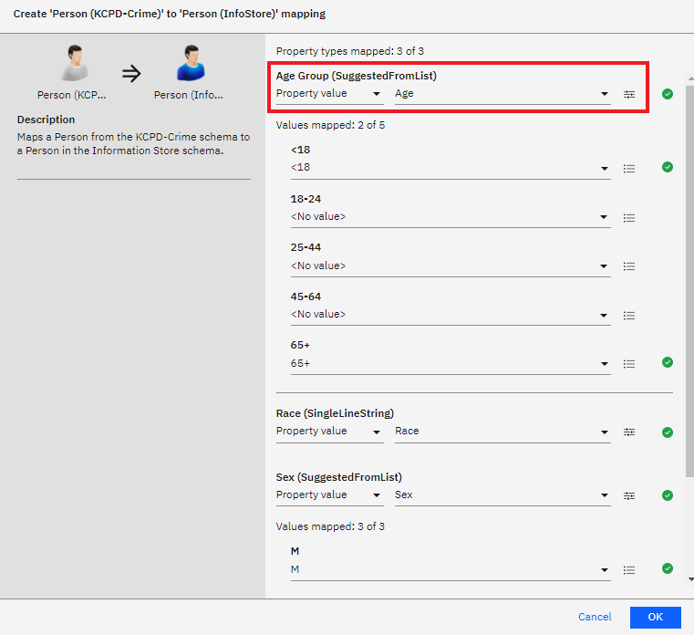
The Age property of the source type and the target type are both SUGGESTED_FROM
properties, but they have different suggested values. The source property, from
the KCPD-Crime schema, has suggested values: <18, 19, 20, 21, ..., 64,
and 65+; whereas the target property, from the Information Store schema, has
suggested values: <18, 18-24, 25-44, 45-64, and 65+.
Notice how the <18 and 65+ values are automatically mapped to one another.
For the remaining target values (18-24, 25-44, and 45-64), you must choose
which source values should map to them.
You have the option to select a single value of the source property from the
dropdown, but that wouldn't make much sense. For example, the source
property values 18, 19, 20, 21, 22, 23, and 24 should all map to
the 18-24 target value. To do this, click the button to the right of the
dropdown menu next to the 18-24 as highlighted below.
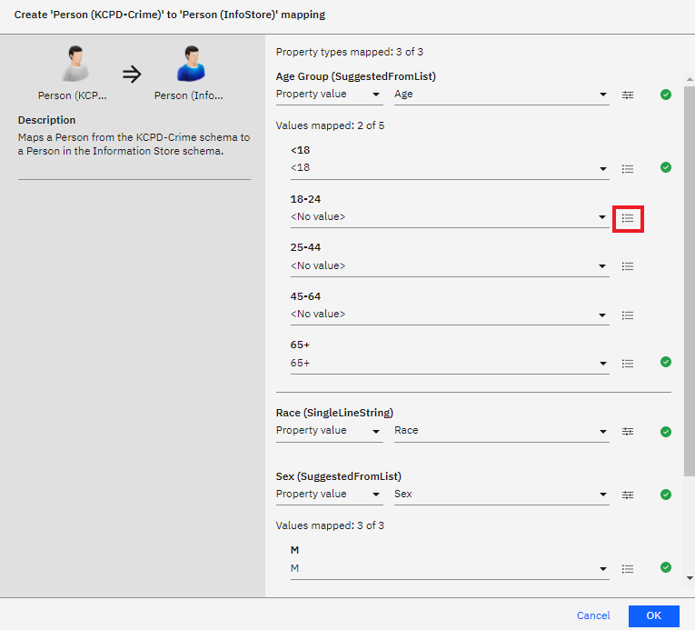
Then, select all the appropriate values as shown below and select a source value to use when the conversion is applied in reverse during any seeded searches.
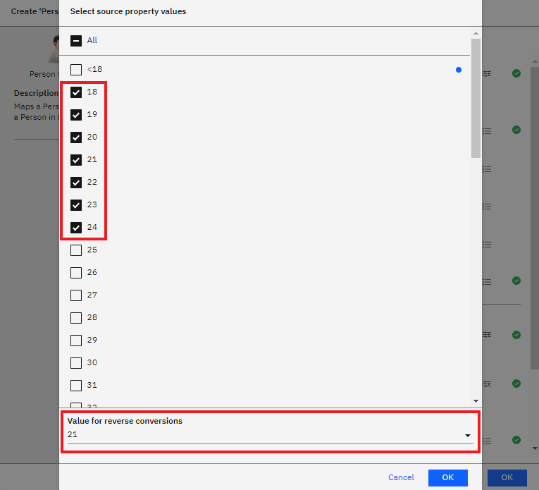
Located At
The Located At (KCPD-Crime) link type can be mapped to the Located At (InfoStore) link type by following the same process:
- Select Located At (KCPD-Crime) in the list of types, then click Create mapping in the right-hand pane.
- Select Located At from the Information Store schema types, then click Create mapping.
- There are no properties to map, so just add a description if you wish.
- Confirm the mapping by clicking OK.
Suspect Of
Map Suspect Of (KCPD-Crime) to Suspect Of (InfoStore) in the same way.
Victim Of
Map Victim Of (KCPD-Crime) to Victim Of (InfoStore) in the same way.
Testing the item type mappings
Once you have updated the item type mappings, you should see the list of types like the example shown below.
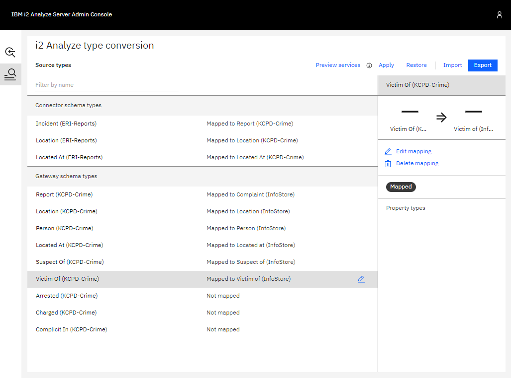
The Arrested, Charged, and Complicit In links are left unmapped, because there are no suitable target link types in the existing Information Store schema. i2 Analyze will recognize that their end types have been mapped and allow the Information Store schema's Person and Complaint types to be connected by these links.
To test the item type mappings by previewing the external searches provided by the KCPD and ERI connectors:
- Click Apply in the top-right. This applies the mappings to the test environment that is available only through the Admin Console. It does not apply the mappings to the live server.
- Click Preview services to open a preview of how the services would behave with the mappings you have configured. Notice how the KCPD Connector's Get All service and ERI Connector's All data service now returns item types from the Information Store schema.
- Go back and make any changes to the mappings, repeating steps 1 and 2 until you are satisfied with the configuration.
Applying the item type mappings to the i2 Analyze server
To apply the mapping configuration you have created on the i2 Analyze server for all users, see Applying the mapping configuration to the i2 Analyze server.
The result
In Analyst's Notebook Premium, use some of the services provided by the connectors and copy some results from each connector to your chart. Notice how the KCPD and ERI connectors now return records whose item types are defined in the Information Store schema.
The KCPD connector returns records whose item types are defined in the KCPD-Crime schema, which are mapped to item types in the Information Store schema directly.
The ERI connector returns records whose item types are defined in the ERI-Reports schema. These item types are mapped to item types in the KCPD-Crime schema that are themselves mapped to item types defined in the Information Store schema. What happens as a result is that the records returned by the ERI connector are mapped to records that align with the Information Store schema.
For example, compare the chart below to the one at the very beginning of this walkthrough in Adding a new connector with a connector schema. You can see that all of the records have types from the Information Store schema, except for the unmapped Complicit In link in the top-left corner.
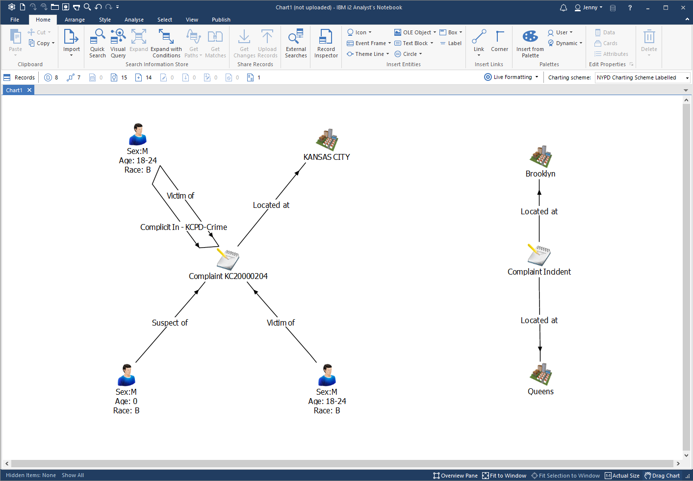
Uploading Information Store mapped records to the Information Store
If you want to upload the selected records to the Information Store, you will notice that the button now enabled.
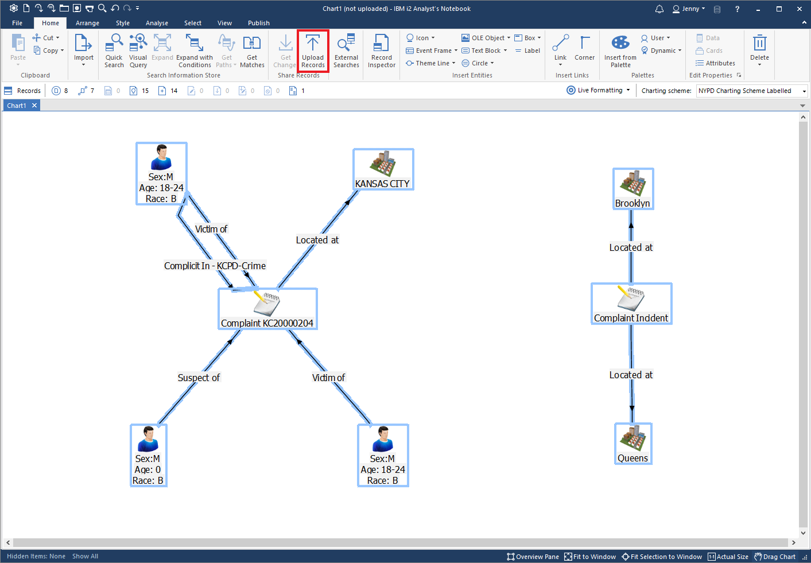
Click Upload Records and in the open window, you'll notice that one of the records would not be uploaded because their item type is not from the Information Store schema. This record would be the unaligned Complicit In link from the KCPD-Crime connector in the top-left corner.
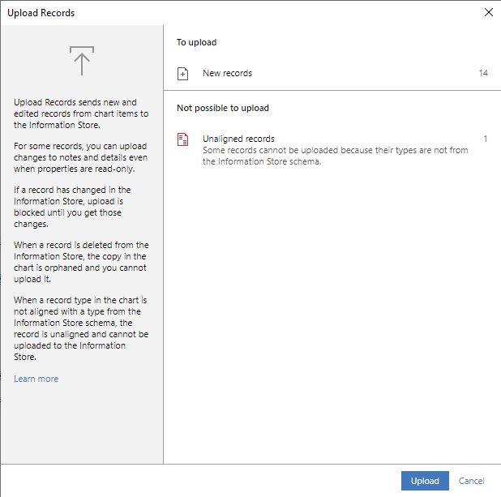
If you want to upload the unaligned Complicit In link item type, you need to return to the earlier step in Configuring item type mappings from a gateway schema to an Information Store schema to configure a mapping for that item type. Otherwise, proceed to click on Upload to upload the aligned records to the Information Store.